As a scientist, I study how microorganisms can be engineered to produce things the world needs — food proteins, natural pigments, and medicines — more sustainably and efficiently.
作为科研工作者，我研究通过工程化改造微生物，以可持续和高效的方式生产世界所需的物质--包括食品蛋白质、天然色素与药物。
Beyond the science, I am interested in how innovations become products: identifying real market needs, validating solutions, and bringing technologies to the people. I believe the value of synthetic biology is ultimately determined not by what can be built in the lab, but by the impact it creates in the real world.
除了科研，我对创新如何转化为产品充满兴趣：如何发现真实的市场需求、验证解决方案的价值，并将技术带给受众。我坚信合成生物学的价值最终不取决于实验室的创造，而取决于创新在现实世界中产生的切实影响。
My research sits at the intersection of metabolic engineering, synthetic biology, and computational biology. I work with yeast and bacteria as a production platform, using tools ranging from genome editing and enzyme mining to machine learning and genome-scale modeling.
我的研究处于代谢工程、合成生物学与计算生物学的交叉前沿。我以酵母与细菌作为生产平台，综合运用基因编辑、酶挖掘、机器学习与基因组尺度模型等手段开展研究。
I am currently a PhD researcher at the Novo Nordisk Foundation Biotechnology Research Institute for the Green Transition (BRIGHT, previously DTU Biosustain), supervised by Prof. Irina Borodina. My current works covers both fundamental and application research in yeast metabolic engineering, and involves both academic publication and direct paths toward commercial application, through collaborations with spin-out companies Typo Foods and Biocolor.
目前，我是丹麦技术大学诺和诺德基金会绿色转型生物技术研究院（前DTU Biosustain）的博士研究生，导师为Irina Borodina教授。我当前的研究覆盖酵母代谢工程的基础科研与应用研究，不仅聚焦于学术发表，也积极推动成果向商业应用转化，通过课题组与初创公司Typo Foods和Biocolor的合作实现技术商业化。
Recent近期动态
Engineering yeast strains capable of converting CO₂-derived and agricultural waste carbon sources into food-grade fungal protein — a sustainable alternative to conventional animal protein.
工程化改造酵母，使其能够将二氧化碳转化及农业废弃物来源的替代碳源转化为适用于食品的真菌蛋白，为传统动物蛋白提供可持续替代方案。
Building a strain development platform in collaboration with UC San Diego. Commercialized through spin-out company Typo Foods.
与加州大学圣地亚戈分校合作建立菌株开发平台技术。成果拟通过初创公司Typo Foods实现商业化。
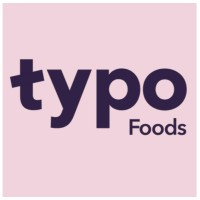
Engineering S. cerevisiae and Y. lipolytica to produce plant-derived natural food pigments through fermentation, addressing metabolic crosstalk via enzyme mining and pathway rewiring.
工程化改造酿酒酵母与解脂耶氏酵母，通过发酵生产植物来源的天然食品色素，并通过酶挖掘与代谢通路重构解决代谢副产物串扰问题。
Commercialized through spin-out company Biocolor.
成果拟通过初创公司Biocolor实现商业化。
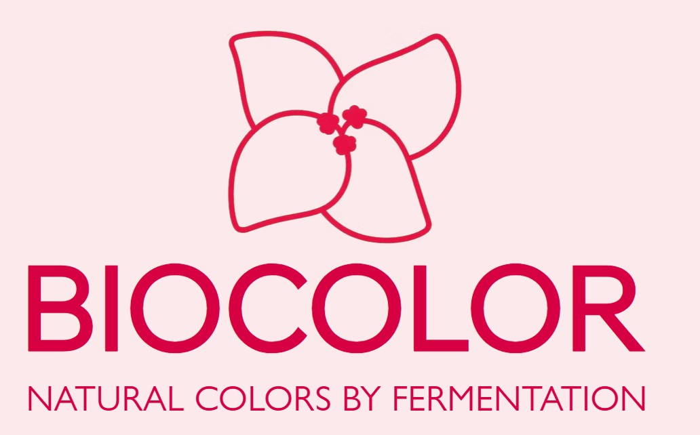
Established a Xenopus oocyte-based platform for characterizing transporter substrate ranges using untargeted metabolomics. Combining adaptive evolution and reverse engineering to expand yeast transport capabilities toward novel substrates.
建立基于非洲爪蟾卵母细胞与非靶向代谢组学的转运蛋白底物广谱性表征平台。结合适应性进化与反向工程，拓展酵母对新型底物的转运能力。
A review was published in Trends in Biotechnology; three manuscripts in submission.
相关综述已发表于Trends in Biotechnology，另有三篇论文在投。
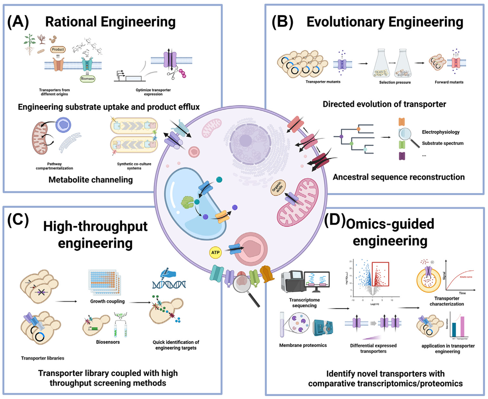
Built genome-scale protein-metabolic network models for Pichia pastoris using semi-automated computational pipelines, accurately predicting optimal growth conditions for recombinant protein production.
基于半自动化计算流程构建毕赤酵母的蛋白质代谢网络模型，能够准确预测重组蛋白生产的最优生长条件并指导菌株工程改造。
Also contributed to an LLM-assisted metabolic engineering design study published in Trends in Biotechnology 2026.
同时贡献于2026年发表于Trends in Biotechnology的大语言模型辅助代谢工程设计研究。
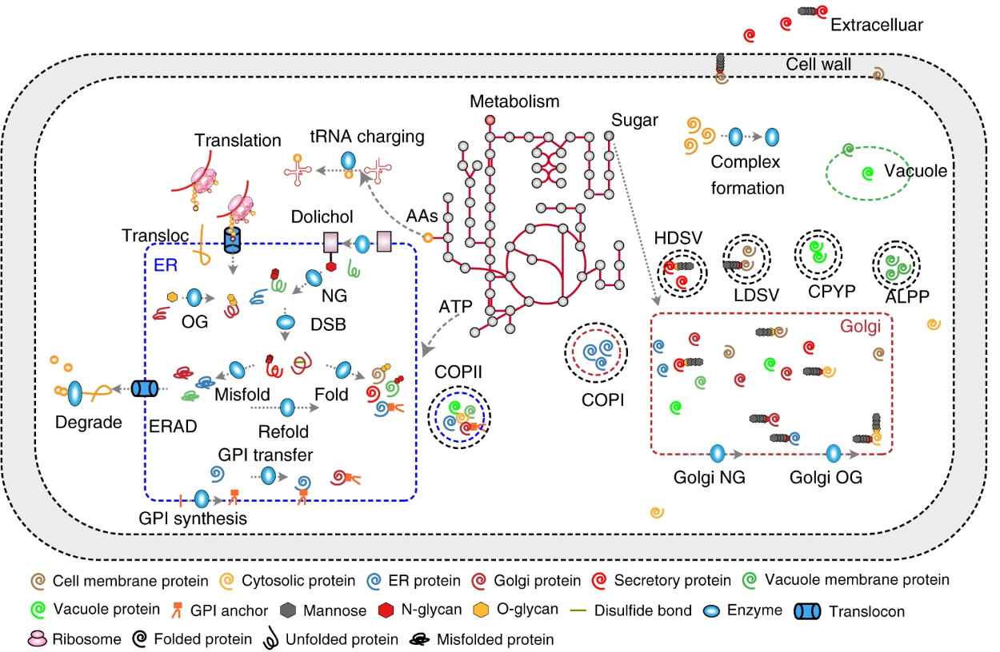
Systematically re-engineered protein translocation pathways and the unfolded protein response in P. pastoris, achieving ~2-fold improvement in human hyaluronidase secretion. Awarded Jiangsu Province Outstanding Master's Thesis.
通过系统改造毕赤酵母中的蛋白转位通路与非折叠蛋白反应，使人透明质酸酶的分泌水平提升约两倍。论文获评江苏省优秀硕士毕业论文。
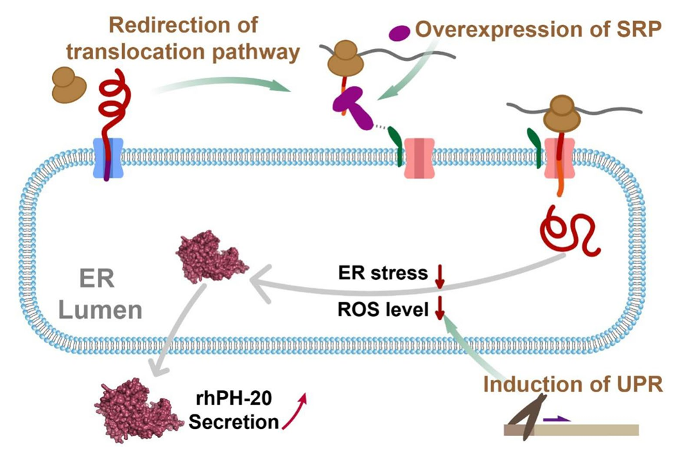
Participated in 20-L pilot-scale fermentation of hyaluronidase and identified the root causes of yield decline during scale-up, restoring production efficiency for an industrial partner.
参与透明质酸酶的20升中试发酵放大生产，识别并解决了合作企业在发酵放大过程中的产量下降问题，对合作方产业化进程产生直接推动作用。

Having hobbies that you take seriously along work, is kind of like living two lives at the same time.
认真投入工作之外的爱好,就像开启了一段平行人生。
Being brave enough to try new things, learning new movements and mindsets, adapting to new routines, and equally importantly, letting go of obsessions, has shaped me into a brighter, stronger, and more open-minded person. Looking back, this may be the most important lesson my hobbies have taught me.
勇于尝试新事物、学习新动作与新思维方式、适应新的生活节奏，以及同样重要的--学会放下执念，让我成为了一个更开朗、更强大、更开放的人。回头看，这或许是我的爱好教给我最重要的一课。
It all started with football.
一切始于足球。
I enjoyed playing football throughout high school. In my graduation year, I discovered freestyle football and immediately thought, "This looks cool." At seventeen, I started practicing.
高中时，我热爱踢足球。高三那年，我接触到了花式足球，当时脑海中只有一个念头："这太酷了。"十七岁，我开始练习。
Two months later, I landed my first trick, the Touzani Around the World. The following year, I became the divisional national champion in the Chinese National Freestyle Football Championships, and defended my title the year after.
两个月后，我完成了人生第一个动作——touzani环绕世界。第二年，我在中国花式足球全国锦标赛获得了级别冠军，之后的一年卫冕。
What fascinated me most was not competition, but exploration.
而那时让我着迷的，不是比赛，而是探索。
At the time, the most difficult tricks involved circling the ball three or even three and a half times before regaining control. Some veterans in the Chinese freestyle community used to say that "Chinese genetics are not designed for 3-rev and 3.5-rev tricks." Whether serious or not, very few athletes in China had managed to perform them consistently.
那个时代，最难的动作需要在两次触球间用腿绕球三圈甚至三圈半。中国花式圈里有前辈曾说"中国人的体质不适合三圈"。不管是玩笑还是认真的，能够稳定完成这些动作的国内选手确实寥寥无几。


I was stubborn enough to try.
我偏要试试。
Training became a process of experimentation. I filmed attempts, analyzed movements, adjusted timing, and repeated the process thousands of times. In the end of my second year of freestyle football, I landed my first 3-rev trick. Over the following years, I continued pushing the limit and eventually mastered ten 3-rev variants and two 3.5-rev tricks, achievements that remain among the highest reached by a Chinese freestyler. Along the way, I also completed hundreds of combinations that had never been performed in China before.
训练成了一个不断实验的过程。我录下每次尝试，分析动作，调整时机，如此循环数以千计。花式足球两年年，我完成了人生第一个三圈动作。此后数年，我持续突破极限，最终掌握了10种三圈和2种三圈半动作，这在中国花式足球运动员中至今仍属最高水平。与此同时，我还完成了数百个“国内首次”的连招组合。
Looking back, freestyle football was probably my first experience with research.
回头看，花式足球大概是我最早的"科研经历"。
Many of the tricks I explored had never been done in China, meaning there was no coach or tutorial to follow. Every training session became a process of observation, hypothesis, testing, failure, and iteration.
我探索的许多动作在国内从无先例，没有教练，没有教程可循。每一次训练都是一个观察、假设、验证、失败、迭代的过程。
I was not a particularly outstanding student during the early years of university. A lack of confidence developed during childhood often stopped me from believing that I could truly excel at something. Yet success in freestyle football gradually changed that. Every difficult trick I learned became evidence that I was capable of solving problems independently.
大学前几年，我并不是一个特别出色的学生。童年时期积累的不自信，让我不确定自己是否真的能在某件事上做到优秀。但花式足球的成功逐渐改变了这一切。每一个攻克的难度动作，都成为"我有能力独立解决问题"的有力证明。
By the time I graduated from my bachelor's degree, that confidence had started carrying over into academics as well. If I could figure out difficult tricks on my own, perhaps I could succeed in science too. Fortunately, that belief turned out to be correct.
到本科毕业时，这种自信开始渗透进学业。既然我能靠自己摸索出高难动作，或许在科研上也能行。幸运的是，这个判断是对的。
Freestyle football remained a major part of my life throughout my bachelor's and master's years. To support my training, I also became serious about physical conditioning. Starting university as a relatively skinny teenager, I gained around fifteen kilograms over the years. At my strongest, I could bench press 115 kg, squat 140 kg, and perform 25 pull-ups at a body weight of 80 kg.
本科和硕士期间，花式足球始终是我生活的重要组成部分。为了支撑训练，我也认真对待体能训练。从进大学时偏瘦，我在几年里增重约十五公斤。巅峰时期，我能卧推115公斤、深蹲140公斤，以80公斤的体重完成25个引体向上。

For a long time, everything seemed to be moving in the right direction. Then reality caught up.
很长一段时间里，一切似乎都在朝好的方向发展。然后，现实追上来了。
Years of wet-lab research, hours spent sitting in front of computers, repetitive gym exercises, and countless freestyle training sessions gradually resulted in persistent lower back pain. At the same time, although I continued training during the beginning of my PhD, I no longer experienced the rapid progress of the early years.
多年的湿实验室工作、长时间坐在电脑前、重复性的健身训练，加上无数次花式足球练习，让我逐渐出现了持续的腰痛。与此同时，尽管博士初期我还在坚持训练，却再也感受不到早年那种飞速进步的快感。
Denmark had the best freestyle football community I had ever seen. Yet for the first time, I no longer felt happy about being a freestyler.
丹麦的花式足球圈子是我见到的最好的。然而，我第一次感到，作为一名花式足球玩家，我不再快乐。
Eventually I realized that the problem was not freestyle football itself.
我最终意识到，问题不在于花式足球本身。
I had simply become too adapted to a single lifestyle. The same hobby. The same routines. The same movements.
我只是对单一的生活方式适应得太久了。同样的爱好，同样的节奏，同样的动作。
My body was getting stiffer, and so was my mindset. At some point I told myself: "I need to make a change." My immediate reaction was fear. "But I'm not good at those things." "It's uncomfortable." "You'll adapt. Just be yourself." I started saying yes.
我的身体在僵化，我的思维也在僵化。某个时刻，我告诉自己："我需要改变。"随之而来的是恐惧。"但我不擅长那些东西。""会不舒服的。""你会适应的，做你自己。"我开始说"好"。
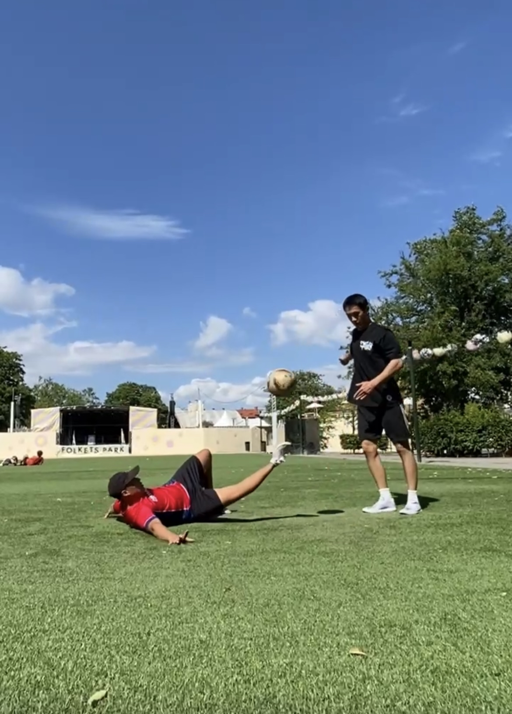
Not to extraordinary things, but simply to activities that had once made me think, "That looks fun." I started bouldering as a terrible climber. I replaced some freestyle training sessions with mushroom hunting in Danish forests, hiking in the mountains, rowing on lakes, and swimming in the sea without worrying whether my technique looked awkward.
不是为了什么了不起的事，只是对那些曾经让我心动的活动，那些让我想"这看起来好玩"的事情，说"好"。我开始学习抱石，最开始的攀岩姿态极差。我把曾经花在花式足球训练上的时间换成了在森林里采蘑菇、在山里徒步、在湖上划船、在大海里游泳-不担心姿势不好看。
The summer of 2025 turned out to be the happiest summer I had experienced since adolescence.
2025年的夏天，成了我成年以来最快乐的一个夏天。
I shouted into forests and cold seawater to release pressure. I watched sunsets over both the Nordic and Mediterranean coasts. I was there to feel terrified and excited while reaching the top of V3–V4 bouldering routes and standing on the edge of mountains in the Alps. I even found the largest porcini mushroom I had ever seen, whose smell I still remember today.
我在森林里和冰冷的海水里大喊来释放压力。我在北欧和地中海的海岸线上看日落。我在攀岩墙上爬上V3–V4的路线顶端，在阿尔卑斯山的山脊边缘感受那种既恐惧又兴奋的感觉。我还找到了我见过的最大的牛肝菌，香气令人难忘。
Something unexpected happened during that period. As my obsession with excelling in a single narrow field gradually eased, my back pain became less overwhelming, and my curiosity returned. I realized how many experiences, skills, and ideas were still waiting to be discovered — not only in hobbies, but also in life and in my career.
那段时间里，一些意想不到的事情发生了。随着对在一个狭窄领域追求卓越的执念慢慢松绑，疼痛减轻了，好奇心回来了。我意识到，还有那么多的体验、技能和想法等待着我去发现，不仅在爱好里，也在生活与事业中。
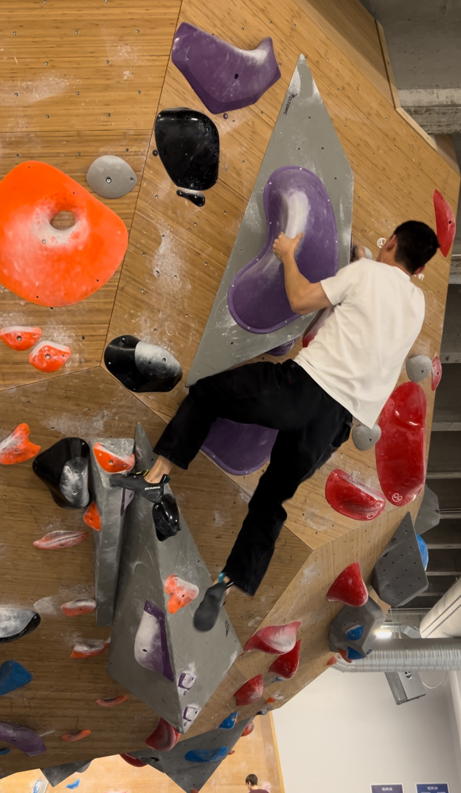
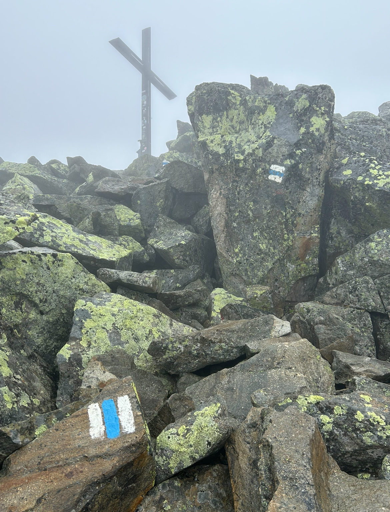
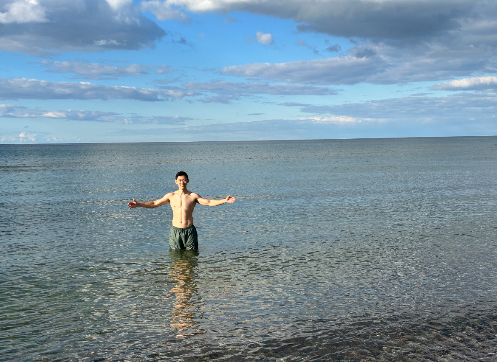
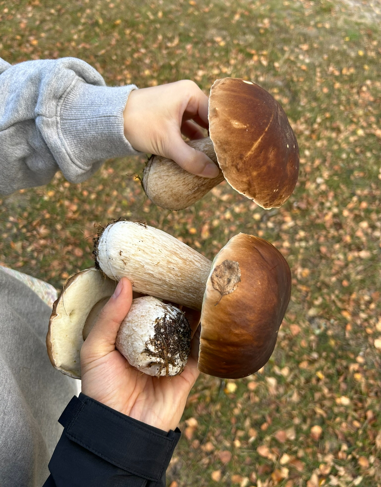
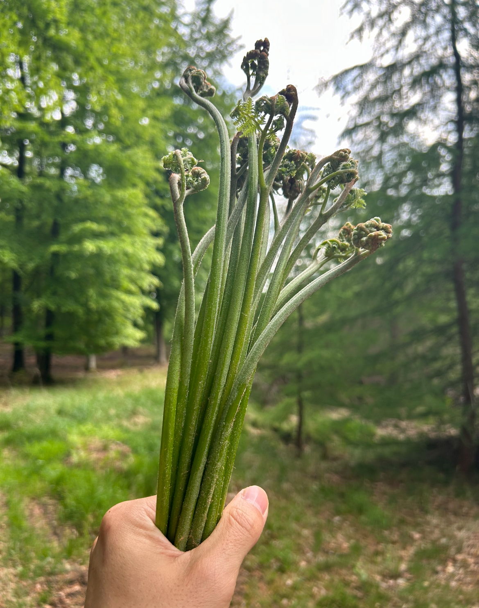
The exploration continues today. I have been lead climbing in China, training for a half-marathon, learning proper swimming technique, and attempting parkour and backflips. And unexpectedly, I also picked up juggling and, with a bit of spare-time practice, became a beginner juggler.
探索仍在继续。我在国内尝试了难度攀岩，在训练半程马拉松，在尝试学习游泳技术，计划练习跑酷和后空翻。意想不到地，我还学起了抛接球杂耍，正在成为一个入门级的杂技玩家。
Last year, while travelling in Switzerland, I met an elderly gentleman cycling along Lake Thun. During our conversation, he told me: "I'm sixty now, but I still feel energized. Every decade feels like a brand new journey. My parents are in their eighties, and they still feel the same way." That sentence stayed with me.
去年，在瑞士旅行时，我在图恩湖边遇到了一位骑行的先生。聊天中，他告诉我："我今年六十岁，但依然精力充沛。人生的每个十年对我来说都是全新的旅程。我的父母已经八十多岁了，他们也依然有同样的感受。"这句话一直留在我心里。
Looking back, I thought this story was about learning to do tricks. It wasn't. It was about learning how to continuously reinvent myself.
回头看，我曾以为我的爱好之路是关于如何学更多的奇技淫巧，但实际上，我学会的是如何不断地从方方面面对自己进行更新迭代。
A football at seventeen led me to championships, confidence, ambition, research, and later on to forests, mountains, oceans, open minds, active living, and friendships across the world. And the journey is only just beginning.
十七岁的一颗足球，带我走向了冠军、自信、野心、科研，后来又带我走向了森林、山川、海洋、开阔的心智、健康的生活方式，以及来自世界各地的友谊。而这段旅程，才刚刚开始。

I am always open to conversations about industry opportunities, collaborative research, or exchanging ideas about synthetic biology and the future of biomanufacturing. I look forward to exchanging ideas and exploring opportunities. 我始终欢迎关于产业机会、科研合作的交流，以及对合成生物学与生物制造未来发展的讨论。期待与来自学术界和产业界的朋友老师分享观点、探索可能性。
zhayu@dtu.dk
+86 18861813783 (China中国)
2800 Kgs. Lyngby, Denmark